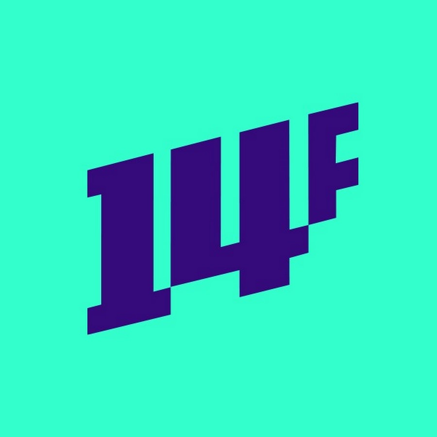
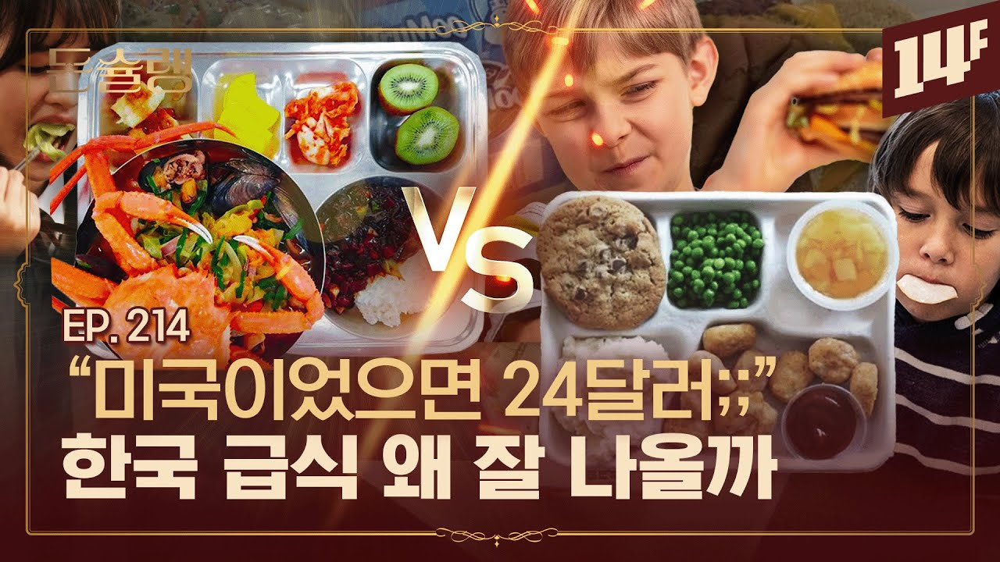
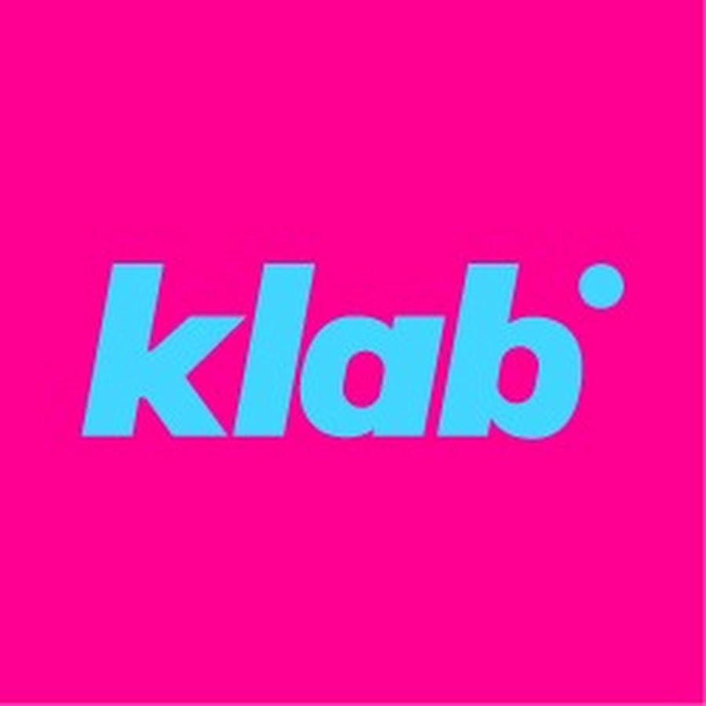
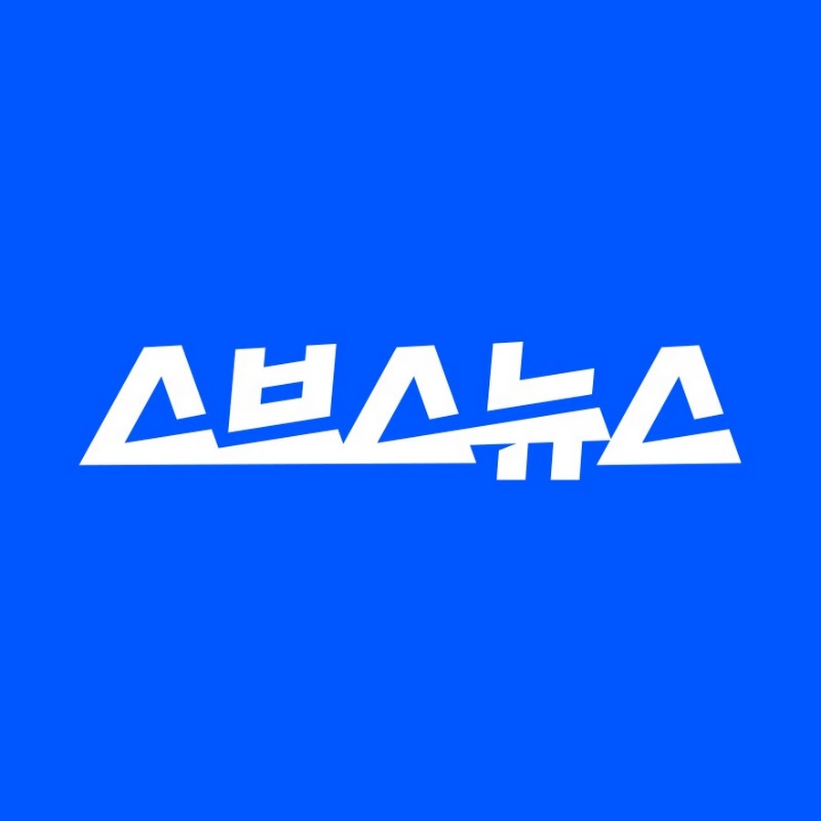
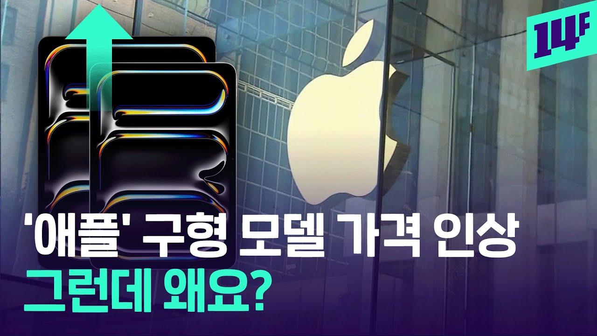
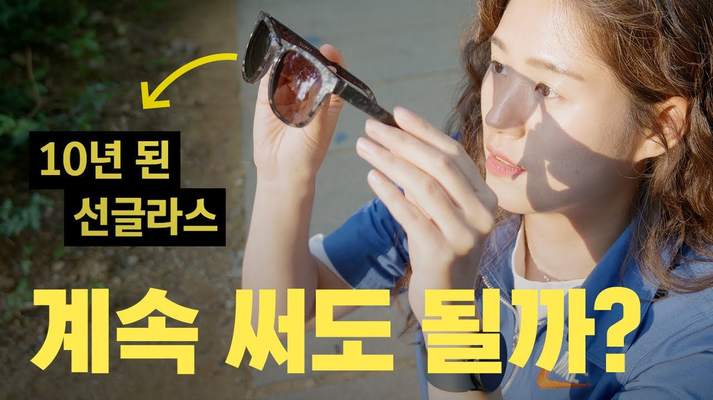

14F
MBC
575편
한국인들은 왜 이렇게 급식에 진심일까🥄ㅣ돈슐랭
내 채널의 다음 기획을 위해
방송사 채널에서 단서를 찾았습니다.


![[EN/ES] 믿었던 플라스틱 분리수거의 배신](assets/v4/njFNSJvm-DM.jpg)

뉴미디어 정보 유튜브 채널을 운영하며, 매번 기획 앞에서 묻습니다.
사람들이 관심을 보일 소재는 무엇인가
같은 정보라도 보고 싶게 만드는 표현은 무엇인가
방송사 뉴미디어 뉴스 채널에서
콘텐츠 주제에 따라 조회수는 어떻게 달라지는가?
제목 표현과 조회수의 관계도 주제·채널에 따라 달라지는가?
업로드 2025.01.01–12.31
조회수 측정 2026.10.18





쇼츠·라이브 제외 · 공개 접근 가능한 영상 · 영상 URL 중복·7개 항목 결측 0건

한 영상에 여러 태그 · 단어 사전 기반 탐색 분류
그 집단 100편 중 35편이면 35%
조회수 증가율·미래 성공확률과 다름
복수 태그 723편 → 비중 합계는 100%를 넘습니다 · 태그 없는 영상 282편
비디오머그는 정치·국제 78%, 14F는 음식·외식 27% · 행 합계는 100%가 아님
소탐대실은 전체 47편: 작은 표본의 세부 결과는 신중히 해석합니다.
제작은 정치·국제 40.7%, 상위권 비중은 과학·환경 30.4%가 가장 높게 관찰됐습니다.
이는 합산 관찰값이며, 가까운 수치의 통계적 우열을 검증한 것은 아닙니다.
음식·외식 태그에서 표본이 가장 큰 두 채널을 비교했습니다.
수치는 음식 태그 집단 전체의 상위권 비중 · 두 영상은 각 집단의 실제 사례입니다.


의미 전체를 판정한 ‘설명형 제목’ 분류가 아닙니다. ‘…일까?’라도 다섯 단어가 없으면 미포함입니다.
35%는 ‘포함 집단 100편 중 약 35편이 상위권’이라는 뜻입니다.
조회수가 35% 증가했다거나 앞으로 성공할 확률이라는 뜻은 아닙니다.
14F는 42% vs21%, 크랩은 27% vs25% · 차이의 크기와 방향이 다릅니다.
소탐대실의 포함 집단은 17편으로 작습니다.
제목만 분류했습니다. 오른쪽 썸네일에 적힌 ‘이유’는 세지 않았습니다.
집단별 관찰 비중이며, 두 영상을 비교 실험한 결과가 아닙니다.
가장 많이 다룬 정치·국제
상위권 비중은 28.7%
과학·환경은 158편, 상위권 30.4%
두 지표를 구분해 후보를 살펴본다
음식 태그의 14F와 스브스뉴스
각 채널 내부 상위권 비중
다른 채널의 인기 소재를
내 채널의 정답으로 바로 옮기지 않는다
단어 포함·미포함 집단
전체 관찰 비중
답할 수 있는 이유 질문을
새 제목의 비교 후보로 만든다
가상 새 기획PB 과자와 브랜드 과자의 가격 차이
B는 비교 후보입니다. 이 기획과 두 제목의 성과는 아직 측정하지 않았습니다.
주제는 내 시청자와 취재 가능성으로 좁히고,
실제로 답할 수 있는 ‘이유’ 질문을 제목 후보로 시험합니다.